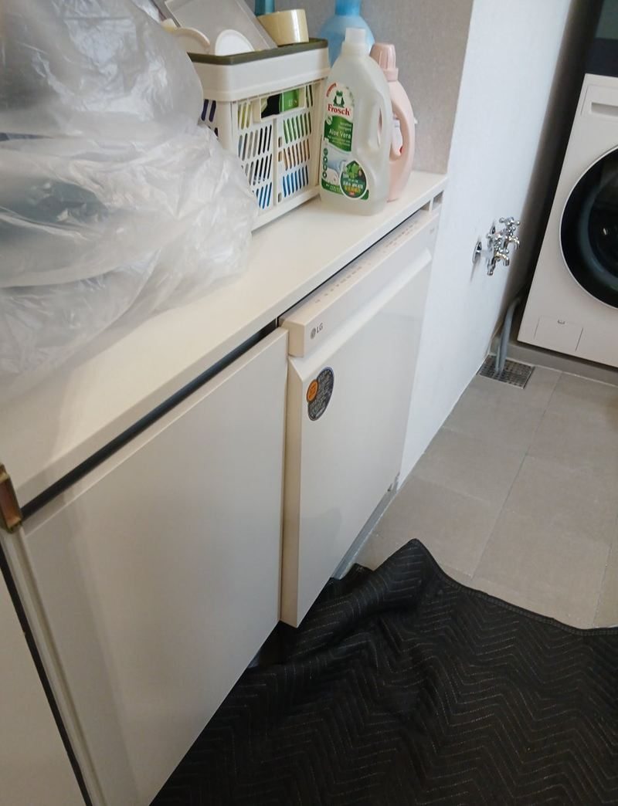
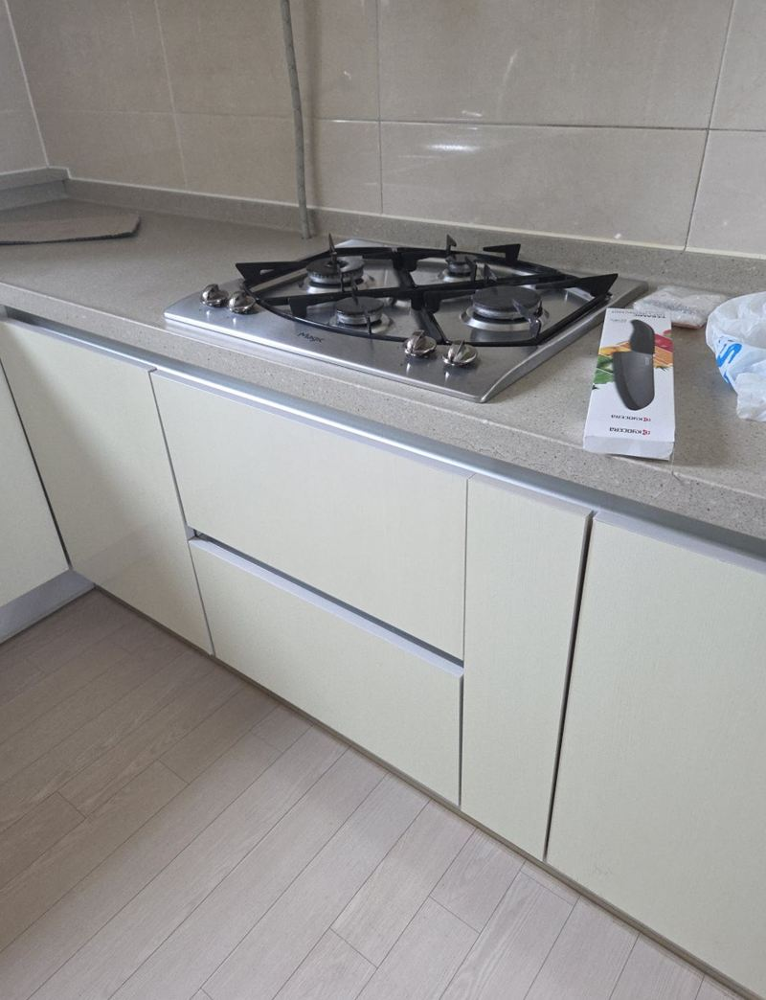
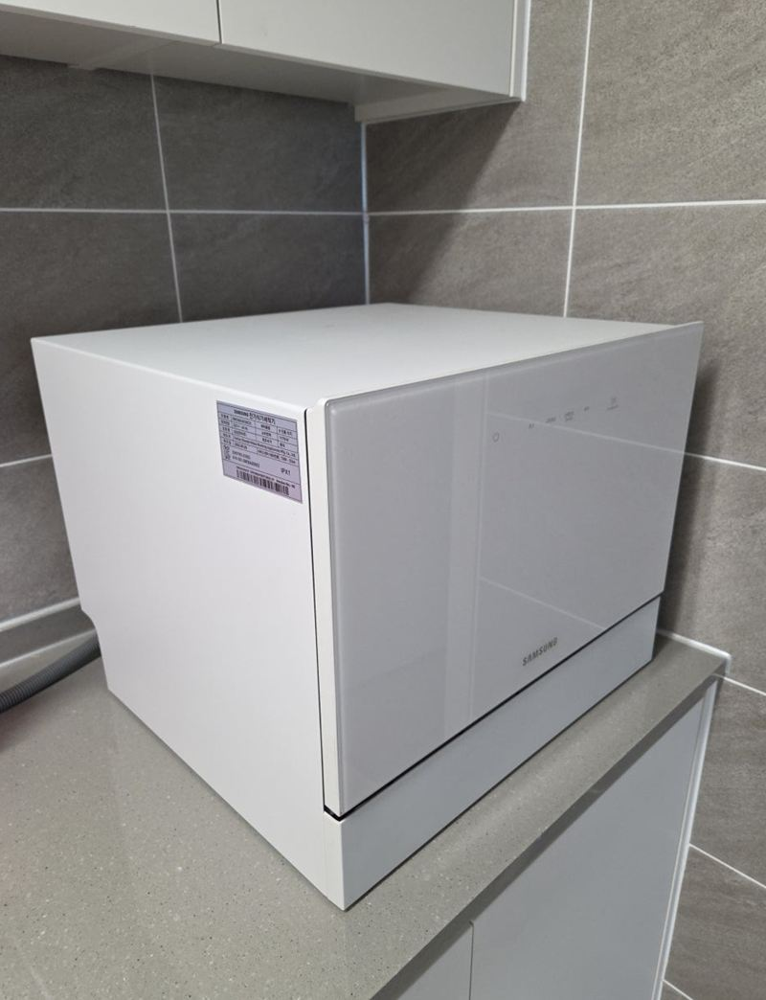
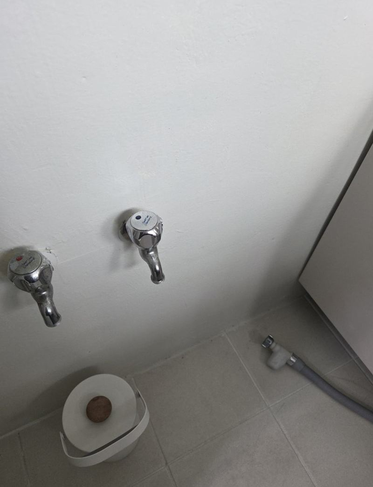
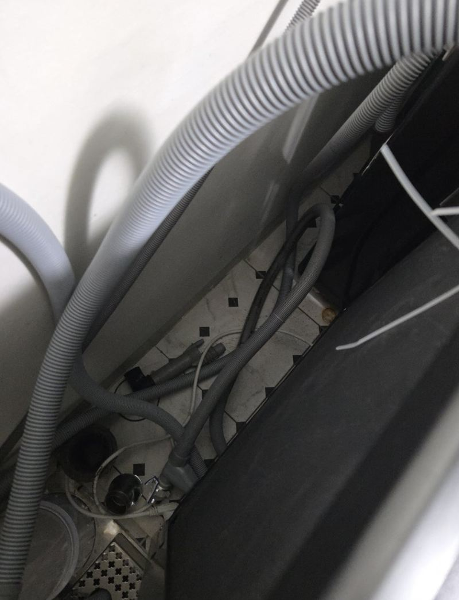
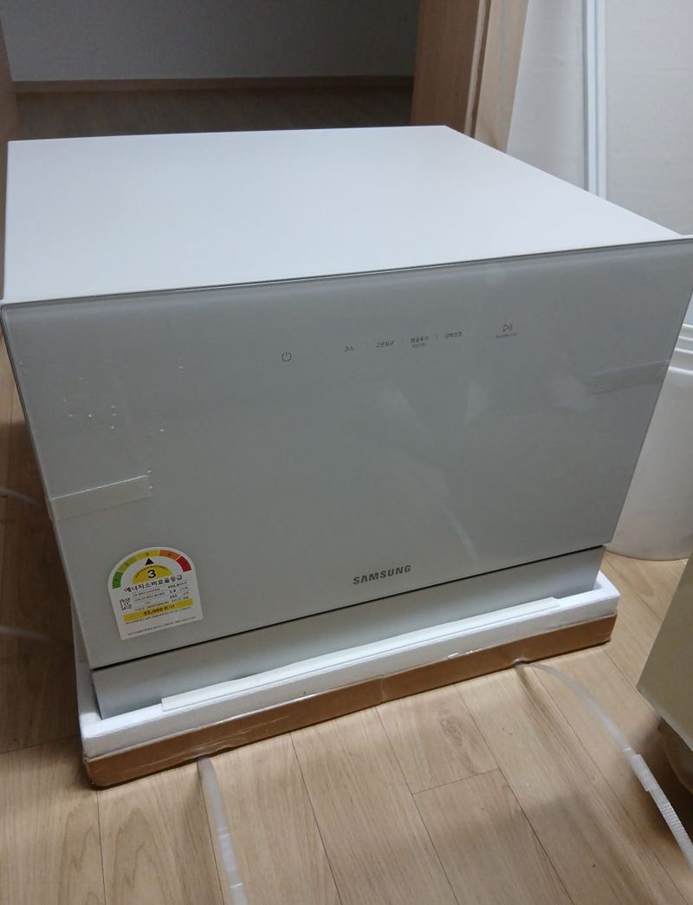

홈 › 식기세척기
식기세척기 설치 방법
매립·베란다 현장 9곳
식기세척기는 사 오는 것보다 어디에 둘지가 더 어려워요. 주방에 자리가 없으면 하부장 한 칸을 비우거나, 베란다로 빼서 급수와 배수를 새로 끌어와야 하거든요. 우리 집에 맞는 설치 방식을 먼저 고르는 게 시작이에요.

설치 방식 세 가지
| 필요한 일 | 이럴 때 | |
|---|---|---|
| 매립형 | 하부장 칸 철거, 문짝 맞춤, 급배수 분기 | 주방 안에 깔끔하게 넣고 싶을 때 |
| 베란다형 | 세탁기 쪽 수전 분기, 배수 연결, 받침장 | 주방에 자리가 없을 때 |
| 스탠드·무타공 | 수전 연결, 상판 위 배치 | 공사를 최소로 하고 싶을 때 |
설치 전에 확인할 세 가지
- 제품 크기(가로·깊이·높이)와 놓을 자리 치수
- 가까운 수전과 배수구 위치
- 전용 콘센트를 쓸 수 있는지
이 세 가지를 사진과 함께 알려주시면, 장을 얼마나 손봐야 하는지와 연결 방법을 미리 말씀드릴 수 있어요.
지역별 식기세척기 설치 현장
 강동 베란다 식기세척기장 제작 설치 방법서울 강동 · 블로그 현장기 ↗
강동 베란다 식기세척기장 제작 설치 방법서울 강동 · 블로그 현장기 ↗ 구리 독립형 식기세척기 이전 설치 방법구리 · 블로그 현장기 ↗
구리 독립형 식기세척기 이전 설치 방법구리 · 블로그 현장기 ↗
화성 베란다 식기세척기 설치 비용화성 · 블로그 현장기 ↗
중랑 식기세척기 매립 공간 만드는 방법서울 중랑 · 블로그 현장기 ↗ 성남 식기세척기 주방문 설치 방법과 장점성남 · 블로그 현장기 ↗
성남 식기세척기 주방문 설치 방법과 장점성남 · 블로그 현장기 ↗
수원 6인용 스탠드 식기세척기 연결 방법수원 · 블로그 현장기 ↗
양천 발코니 식기세척기 설치, 급수 연결 방법서울 양천 · 블로그 현장기 ↗
양주 식기세척기·세탁기 급배수 듀얼 연결 방법양주 · 블로그 현장기 ↗
양평 무타공 식기세척기 설치 방법과 장점양평 · 블로그 현장기 ↗
식기세척기 설치 질문
쓰던 식기세척기를 이사 갈 집에 다시 달 수 있나요?
네, 떼어 옮겨 새 집 구조에 맞게 다시 연결한 현장이 있어요.
세탁기와 식세기를 한 수전에 같이 쓸 수 있나요?
분기 부속으로 나눠 쓰는 방법이 있어요. 수압과 배수 높이를 보고 결정해요.
놓을 자리 사진과 제품 모델명을 함께 알려주세요.
전화 상담 010-4517-9872